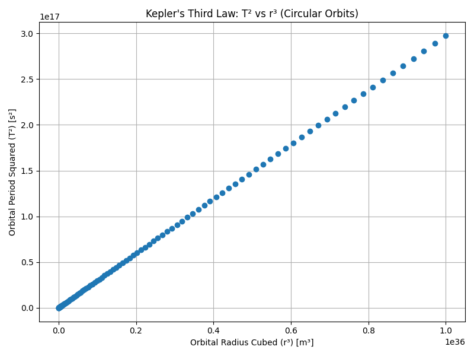
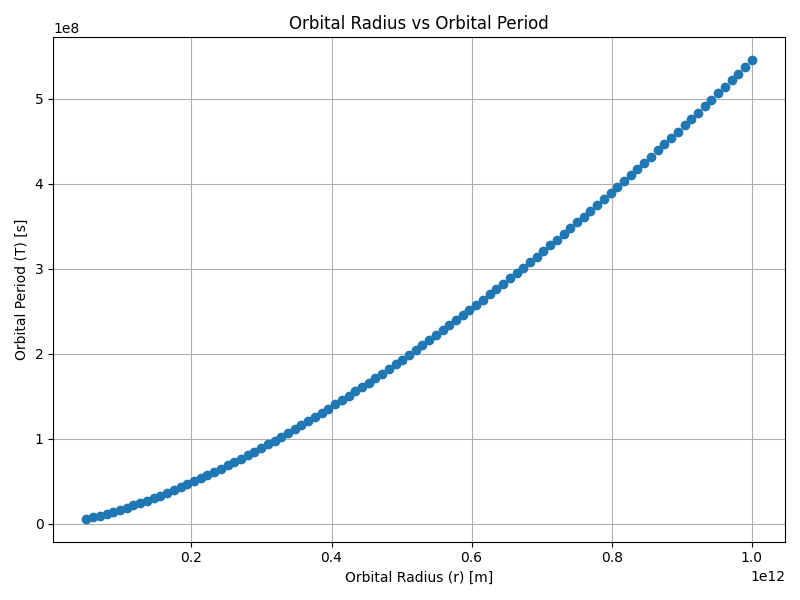
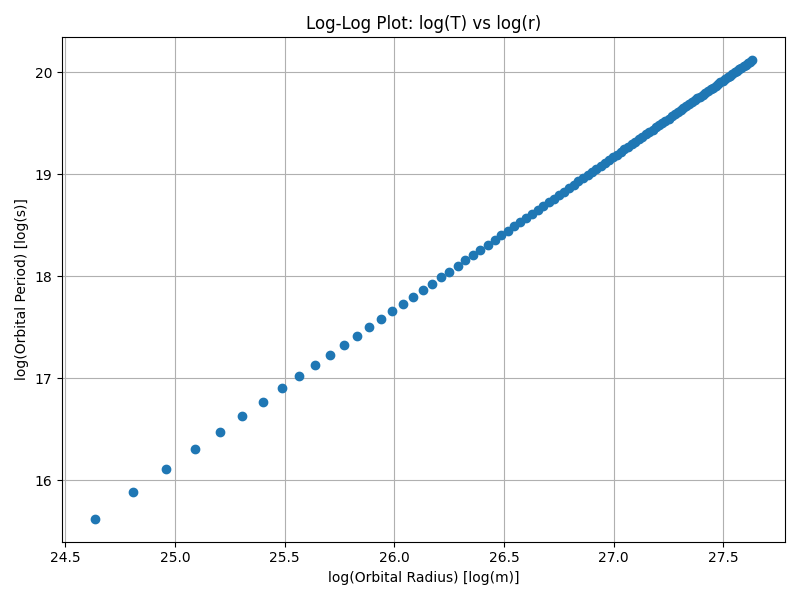
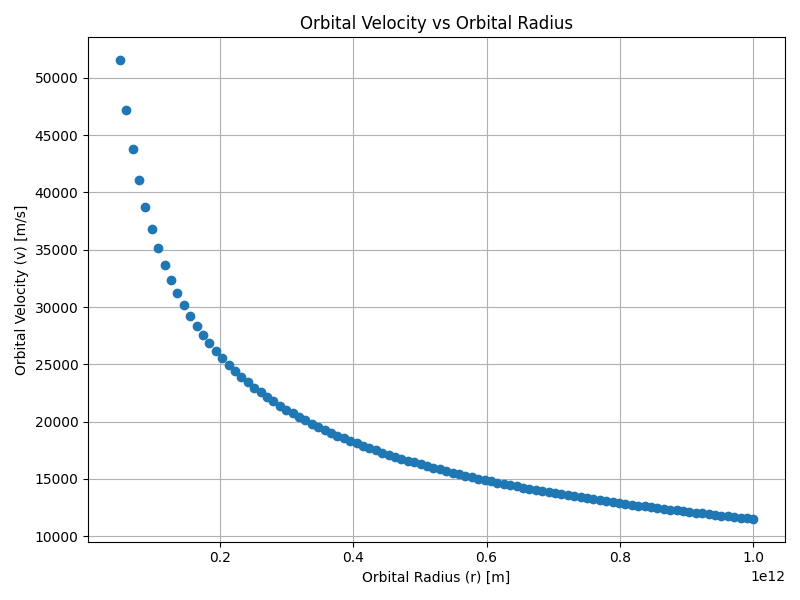

Problem 1
Orbital Period and Orbital Radius
Motivation
"Kepler's Third Law" links the square of the orbital period with the cube of the orbital radius, forming a cornerstone of celestial mechanics.
- Purpose: Understand planetary motions and gravitational interactions from satellites to cosmic scales.
- Goal: Connect fundamental principles of gravity to real-world phenomena like satellite orbits and planetary systems.
Derivation of Kepler’s Third Law
Starting from Newton's Law of Universal Gravitation:
and the centripetal force required for circular motion:
Equating the two forces:
Simplifying:
The orbital period \(T\) is related to \(v\) as:
Substituting:
Expanding:
Cross-multiplying:
Finally, solving for \(T^2\):
For elliptical orbits, replace \(r\) with \(a\) (semi-major axis):
Task List
- Derive the relationship between the square of the orbital period and the cube of the orbital radius for circular orbits.
- Discuss the implications of this relationship for astronomy, including its role in calculating planetary masses and distances.
- Analyze real-world examples, such as the Moon’s orbit around Earth or the orbits of planets in the Solar System.
- Implement a computational model to simulate circular orbits and verify the relationship.
Deliverables
- A Markdown document containing explanations and Python code.
- A detailed explanation of orbital mechanics and Kepler’s Third Law.
- Graphical representations generated from simulations and real data.
- A discussion on how this relationship extends to elliptical orbits and other celestial bodies.
Graphs Section
Graph 1: Kepler's Third Law (T² vs r³)
```python import numpy as np import matplotlib.pyplot as plt
Constants
G = 6.67430e-11 # Gravitational constant (m³/kg/s²) M = 1.989e30 # Mass of the Sun (kg)
Orbital radii (in meters)
radii = np.linspace(5e10, 1e12, 100)
Orbital periods (in seconds)
periods = 2 * np.pi * np.sqrt(radii**3 / (G * M))
Plotting T² vs r³
plt.figure(figsize=(8,6)) plt.plot(radii3, periods2, 'o') plt.xlabel('Orbital Radius Cubed (r³) [m³]') plt.ylabel('Orbital Period Squared (T²) [s²]') plt.title("Kepler's Third Law: T² vs r³ (Circular Orbits)") plt.grid(True) plt.tight_layout() plt.savefig('kepler_third_law_graph.png') plt.show()

Orbital Radius vs Period
plt.figure(figsize=(8,6)) plt.plot(radii, periods, 'o') plt.xlabel('Orbital Radius (r) [m]') plt.ylabel('Orbital Period (T) [s]') plt.title('Orbital Radius vs Orbital Period') plt.grid(True) plt.tight_layout() plt.savefig('orbital_radius_vs_period.png') plt.show()

Log-Log Plot
plt.figure(figsize=(8,6)) plt.plot(np.log(radii), np.log(periods), 'o') plt.xlabel('log(Orbital Radius) [log(m)]') plt.ylabel('log(Orbital Period) [log(s)]') plt.title('Log-Log Plot: log(T) vs log(r)') plt.grid(True) plt.tight_layout() plt.savefig('log_log_plot.png') plt.show()

Orbital Velocity
velocities = np.sqrt(G * M / radii)
plt.figure(figsize=(8,6)) plt.plot(radii, velocities, 'o') plt.xlabel('Orbital Radius (r) [m]') plt.ylabel('Orbital Velocity (v) [m/s]') plt.title('Orbital Velocity vs Orbital Radius') plt.grid(True) plt.tight_layout() plt.savefig('velocity_vs_radius.png') plt.show()
